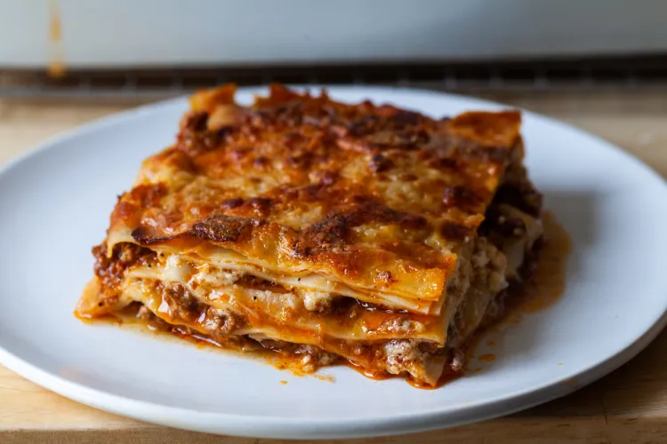

Lasagna

Description
Well, here we are. How would you describe lasagna? How COULD you describe lasagna?
I think it's clear - it is the best damn recipe in the whole entire world. Just look at that photo.
Ingredients
- 500g of dry lasagna sheets
- 1L of passata
- 4 cloves of garlic
- 1 large brown onion
- 500g of pork & veal mince
- 1 bunch of basil
- 1/2 cup of parmesan
- 1 cup of whole milk
- 1 tsp of flour
- 5 tbsp of olive oil
- salt and pepper to taste
Steps
- Heat some oil in the pan and fry off the garlic and onions
- Once oil is fragrant and vegetables are sweated, brown off meat
- Add passata and some basil leaves. Cook down for 2 hours or until oil has separated from sauce
- In a separate pot bring milk to a simmer and add flour. Keep stirring until thickened. Add parmesan and stir
- Once both sauces are ready, prepare a tray and layer with dry sheets, meat, white sauce and repeat until full
- Top with mozzarella, cover with foil, and cook at 210*c until sheets are al dente
- Take cover off and cook until top is golden and bubbly